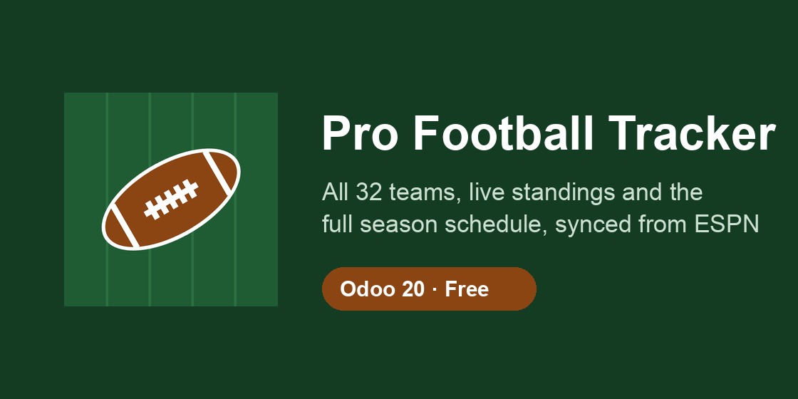

Every pro football team, the current standings and the full season schedule, kept up to date inside Odoo.

What you get
Teams: all 32 teams with logo, conference and division, grouped by division out of the box.
Standings: wins, losses, ties, win percentage, points for and against, point differential, streak and playoff seed.
Schedule: every regular-season and postseason game with kickoff time (in your timezone), stadium, city, TV network, score and status (scheduled, in progress, final, postponed).
Calendar view of the season, color-coded by home team, plus filters for upcoming games, finals, postseason and international / neutral-site games.
Each team page shows its next game and its full schedule.
Setup
Install the app. No account or API key is needed.
Open Football → Teams and click Sync from ESPN. The first sync takes about a minute.
After that, a scheduled action refreshes teams, standings and scores every 6 hours. You can change the interval under Settings → Technical → Scheduled Actions.
Notes
Data comes from ESPN's public site API, which is undocumented and could change without notice.
Team logos are loaded from ESPN's servers when displayed; none are bundled with the module.
Requires the Python requests library (included with Odoo).
Not affiliated with, endorsed by, or sponsored by the National Football League or ESPN. NFL, team names and logos are trademarks of their respective owners.